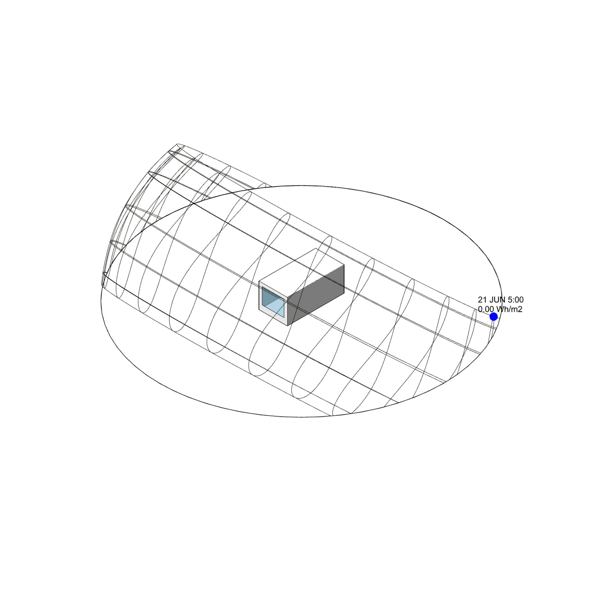

Generative Verschattung
Ladybug
⬤ Ladybug generiert optimale Verschattungsgeometrien algorithmisch – inverse Planung ab Zielzonen (Komfort, Energie). Iterative Optimierung gegen PMV, PET, UTCI und Tageslicht. Balanciert Kühllast-Reduktion, Behaglichkeitsstunden und saisonale Solarerträge. Multikriterielle parametrische CAD-Modelle direkt ausführbar – Automatisierung für energieeffiziente Fassaden.
⬤ Ladybug algorithmically generates optimal shading geometries – inverse planning based on target zones (comfort, energy). Iterative optimization against PMV, PET, UTCI, and daylight. Balances cooling load reduction, comfort hours, and seasonal solar yields. Multi-criteria parametric CAD models directly executable – automation for energy-efficient facades.